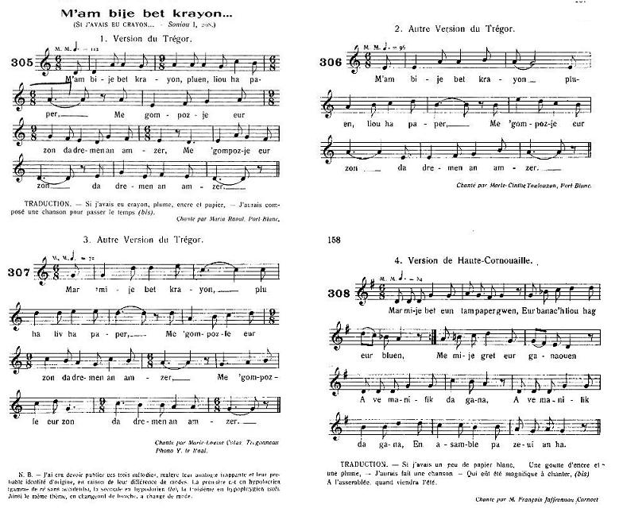

|
A propos des mélodies: On a combiné les 4 mélodies publiées par Maurice Duhamel dans "Musiques Bretonnes" (Gwerzioù ha Sonioù Breizh Izel) en 1913, sous les n° 305 à 308, pages 157 et 158 pour accompagner "M'am bije bet krayon", l'équivalent du présent chant dans les "Sonioù", tome I de F-M. Luzel, à savoir: Bibliographie Un chant similaire a été noté par Luzel dans Sonioù Breiz-Izel, tome I, p.208, sous le titre "M'am-bije bet crayon". Remarques Le texte de Luzel peut se résumer ainsi: "Si j'avais un crayon, je ferais une chanson sur ma maîtresse qui me désole: en pleurant, elle a planté trois bouquets pour faire sa couronne et, trois jours après, trois autres pour faire la mienne. - Ne m'aviez-vous pas dit que vous m'épouseriez à 25 ans- lui demandé-je. - Si vous étiez procureur ou notaire, je ne vous intéresserais pas. - Si j'étais empereur et vous mendiante, je vous aimerais et vous épouserais. - Mes vieux parents seraient ruinés, si je les quittais. - Que deviendrez quand ils seront morts? - Si j'avais de l'argent, j'irais au couvent! - Moi je vous en donnerai et je me ferai prêtre! - Je suis allé chez ma maîtresse, jusquà la porte de son cur, sans trouver l'ombre d'une consolation auprès de ce cur triste et captif. Jai fait la cour à toutes sortes de filles: nulle part je n'ai trouvé sa pareille." |
About the tunes Here are combined together 4 tunes published by Maurice Duhamel in "Musiques Bretonnes" (Gwerzioù ha Sonioù Breizh Izel) in 1913, under numbers 305 with 308, on pages 157 and 158 to be sung to "M'am bije bet krayon", the equivalent of the present song in F-M. Luzel's "Sonioù", Part I, to wit: Bibliography A similar song was recorded by F.-M. Luzel in his 'Sonioù Breiz-Izel', part I, p.208, under the title "M'am-bije bet crayon". Remarks Luzel's text may be summed up as follows: "If I had a pencil, I would compose a song about my sweetheart who distresses me: crying, she planted three flowerbeds to make her wreath and, three days later, three others to make mine. - Didn't you say you would marry me when you were 25 - I asked her. - If you were an attorney or a solicitor, you wouldn't care for me. - If I were an emperor and you were a beggar, I would love you and I would marry you. - But my old parents would be utterly destitute, if I happened to leave them alone. - What about you, once they are dead? - If I had money, I wish I could enter a convent! - I shall give you money and I shall become a priest! - I went to my sweetheart's house, knocked at the door of her heart, but did not get the least response from this sad and captive heart. I went around with all sorts of girls: nowhere did I see the like of her." |
|
BREZHONEK p. 246 1. M'am-bije ur pluenn, pluenn, liv ha paper Spered evit merkañ hag ur pennad amzer. 2. Me a refe ur zon, O, ya d'am mestrez koant D'eus plantet em c'halon ur bouked a druez. 3. Me 'm-eus graet va studi evit bezhañ belek, Evit garout ar plac'h, me 'm-eus amzer kollet. 4. Nag ar greunenn raden zo diaes da gaved! Meur a hini he gwel ha n'he anavezh ket. 5. Kalonik va mestrez a zo heñvel: a dro: Biskoazh n'am-eus gallet gouzout mat he menoz. 6. Me wel va mestrezik o vont d'an oferenn, Skeudenn ar grusifi ganti en he c'herc'henn. Gouelañ a ra outi evel ur Vadelen. 7. Me wel ma mestrezik en he jardin kuzhet, Glac'haret he c'halon, o plañtañ tri bouked, 8. O plantañ tri bouked demeus a louzaoioù: D'ober he c'hurunenn un devezh erruio. 9. Mez me, planto un all, 'mesk ar bleunioù nevez, Vit ober m' c'hurunenn tri devez da-c'houde. 10. Kement doan am-boa da vezhañ anaveet, E-giz d'un eostik-noz me vije disgizet. 11. - Nag, emezi, va zad, c'hwi ho-poa skrivet din, E teufec'h d'ugent bloaz evit va eurediñ, C'hoantet nemedon en ide da verc'h-kaer. 12. - Na mar yec'h da gouant dindan ur zae gwenn, Me 'z a yo a velek dindan ur soutanenn. - KLT gant Christian Souchon |
TRADUCTION FRANCAISE p. 246 1. Que n'ai-je une plume, de l'encre et du papier, De l'esprit pour écrire, ainsi qu'un peu de temps! 2. A celle qui planta la fleur de la pitié En mon cur, à ma belle, j'offrirais un chant. 3. J'étudiais longtemps en vue de la prêtrise: Tout ce temps, pour l'amour d'une fille, est perdu! 4. La graine de fougère aux regards se déguise: Et plus d'un qui l'a vue ne la reconnaît plus. 5. Tel est le cur changeant de ma jolie maîtresse: Jamais je n'ai su quels étaient ses sentiments. 6. Un beau jour je la vois qui se rend à la messe, Avec à son cou blanc, un crucifix d'argent Telle Madeleine, elle pleure abondamment. 7. Au fond de son jardin, cachée, je la devine: En proie au chagrin, elle plante trois bouquets. 8. Trois bouquets où ne poussent que des herbes fines Pour sa couronne quand l'heure en aura sonné. 9. Mais moi, j'en veux planter d'autres, des fleurs nouvelles, Pour ma propre couronne, hélas, trois jours après. 10. Je craignais tant d'être reconnu par la belle, Qu'en rossignol de nuit je m'étais déguisé. 11. - Mon père, vous m'aviez écrit jadis, dit-elle, Que vous m'épouseriez, quand vous auriez vingt ans. Me voulez-vous comme belle-fille à présent? 12. - Entrez en robe blanche en un couvent de femmes! Moi, je me ferai prêtre et prendrai la soutane. - Traduction Christian Souchon (c) 2015 |
ENGLISH TRANSLATION p. 246 1. If I had a quill, ink and a piece of paper And were witty enough, in a time of leisure, 2. I would compose a song telling of my sweetheart Who has planted a bunch of sorrow in my yard. 3. I have studied a long time to become a priest: I love her: it has been wasted time ever since. 4. The grain of the fern plant is not easy to find: Many eyes see it and don't think it's the right kind. 5. Feelings in that girl's heart will turn and change always: Never could I decide if she means what she says. 6. Once I saw my sweetheart on her way to the Mass. Wearing around her neck a cross of gilded brass Which she bathed in her tears, the unfortunate lass! 7. I shadowed her: she stole into her yard and shed Bitter tears as she planted there three flower beds. 8. Three flower beds of herbs, of herbs exclusively: To make a nun's wreath, time had come apparently. 9. - I shall put other plants amongst these new herbs all For a wreath of my own, within three days, I shall! - 10. As I was in dread lest I could be recognized, I did it, but was as a nightingale disguised. 11. - Padre, she said, you wrote to me once expressly You would come when you were twenty, to marry me. I'd be your stepdaughter instead, do you agree? 12. - For a nun clad in white I would be a good catch: I shall be a priest and wear a cassock to match! - Translated by Christian Souchon (c) 2015 |